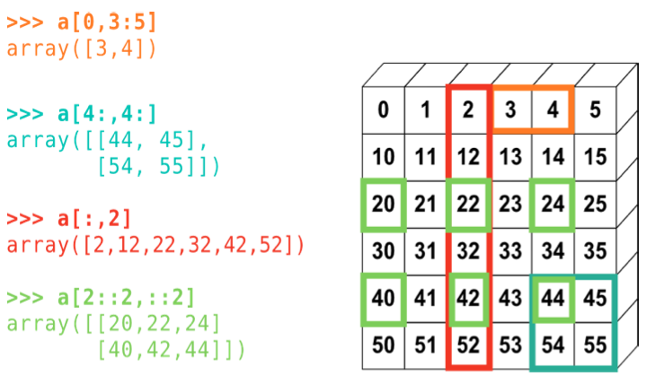

Python arrays : Numpy#
REF: Scipy tutorial and A primer of Scientific Programming with Python, Lantangen.
The numerical python package, numpy, allows for easy and efficient manipulation of vectorial data. In this context, it is important to remark some of the so-called vectorial computation. Let’s give an example. Imagine a two dimensional vector \(a\). How would you represent it using python? You coul use either a list, a tuple, etc:
a1 = [x, y]
a2 = (x, y)
Of course, it can be generalized to more dimensions:
a1 = [x, y, z, w]
a2 = [0.0, -0.9, 1, -3, 9, ... , 90]
Managing vectors by using these typical python constructs is very good from a general programmer point of view, but it has its costs. For example, iterating over a lits by means of a for loop could be very slow. Actually, for typical problemas of computational mathematics and physics, only homogeneous storage structs with fast access are needed, like the arrays of languages like c++, fortran, etc. Arrays might be more limited than general lists, but could vastly outperform lists and tuples for vectorial computations. The numpy package provides array like structs to perform fast mathematical operations on numerical data.
Furthermore, vectorial operations are natural on numpy arrays. But what is a vectorial operation? Let’s assume we have a vector \(v\) of \(n\)-components. What would be the meaning of something like
u = sin(v)
? in the context of vectorial computing, it would mean to apply the function sin to every component of the vector v, therefore \(u_i = \sin(v_i)\). In general, given a function \(f\), the expression \(u = f(v)\) means \(u_i = f(v_i)\). Numpy allows for this kind of computing. What would be the meaning of
u = v^2*cos(v)*e^v + 2
?
Let’s actually compute it. Vectorial computing means: apply the whole expression element-by-element, with no explicit loop.
import numpy as np
v = np.array([0.0, 0.5, 1.0, 1.5, 2.0])
u = v**2 * np.cos(v) * np.exp(v) + 2
print(u)
# compare: what would this look like with a plain Python list?
# you'd need a loop or a list comprehension, elementwise, by hand:
u_list = [x**2 * np.cos(x) * np.exp(x) + 2 for x in [0.0, 0.5, 1.0, 1.5, 2.0]]
print(u_list)
[ 2. 2.36172226 3.46869394 2.71329982 -10.29972928]
[np.float64(2.0), np.float64(2.3617222591460423), np.float64(3.468693939915885), np.float64(2.713299823055998), np.float64(-10.299729282557436)]
Broadcasting#
Basic numpy#
Try the following code snippet:
import numpy as np
a = np.array([0, 1.0, 3, 5])
print (a)
a.dtype
[0. 1. 3. 5.]
dtype('float64')
This means: we are importing the numpy package with the name np. Then, we create an numpy array by using the np.array function from a list of values, and assign the result to the variable a. What is a? use a? . The array a has several attributes which you can use later, like the shape and type of the internal data.
Let’s now compare the efficiency of a list versus a numpy array, by means of the %timeit magic function of ipython:
L = range(10000)
%timeit [i**2 for i in L]
493 μs ± 33.3 μs per loop (mean ± std. dev. of 7 runs, 1,000 loops each)
a = np.arange(10000)
%timeit a**2
2.45 μs ± 7.93 ns per loop (mean ± std. dev. of 7 runs, 100,000 loops each)
You can extract some info like the shape and the dimension as
Notice that numpy arrays are homogeneous
a = np.array([0, 1.0, '3', 5])
print (a)
a.dtype
['0' '1.0' '3' '5']
dtype('<U32')
Why did every element become a string? NumPy arrays are homogeneous — every element must share one dtype. When you mix types, NumPy picks the “widest” common type that can represent all of them: int → float → string, in that order. A string beats everything, since any number can be written as a string but not every string can be parsed as a number.
You can also access more info about arrays
a.ndim
1
a.shape
(4,)
a.dtype
dtype('<U32')
Alternative ways to create arrays#
a = np.arange(10)
b = np.arange(1, 9, 2)
The function linspace is very useful. It allows to create a uniform partition on a given interval for a given number of points. For example, to create an array of 100 points uniformly on the interval [2, 3], you can use
a = np.linspace(2, 3, 100)
print (a)
[2. 2.01010101 2.02020202 2.03030303 2.04040404 2.05050505
2.06060606 2.07070707 2.08080808 2.09090909 2.1010101 2.11111111
2.12121212 2.13131313 2.14141414 2.15151515 2.16161616 2.17171717
2.18181818 2.19191919 2.2020202 2.21212121 2.22222222 2.23232323
2.24242424 2.25252525 2.26262626 2.27272727 2.28282828 2.29292929
2.3030303 2.31313131 2.32323232 2.33333333 2.34343434 2.35353535
2.36363636 2.37373737 2.38383838 2.39393939 2.4040404 2.41414141
2.42424242 2.43434343 2.44444444 2.45454545 2.46464646 2.47474747
2.48484848 2.49494949 2.50505051 2.51515152 2.52525253 2.53535354
2.54545455 2.55555556 2.56565657 2.57575758 2.58585859 2.5959596
2.60606061 2.61616162 2.62626263 2.63636364 2.64646465 2.65656566
2.66666667 2.67676768 2.68686869 2.6969697 2.70707071 2.71717172
2.72727273 2.73737374 2.74747475 2.75757576 2.76767677 2.77777778
2.78787879 2.7979798 2.80808081 2.81818182 2.82828283 2.83838384
2.84848485 2.85858586 2.86868687 2.87878788 2.88888889 2.8989899
2.90909091 2.91919192 2.92929293 2.93939394 2.94949495 2.95959596
2.96969697 2.97979798 2.98989899 3. ]
The .data attribute doesn’t print a readable address — it just gives you a memory
object. What we actually want to see is the same idea from the lists lecture (id(a[i])
scattered all over the place), but for a numpy array: a constant stride between
consecutive elements, because they sit back-to-back in one block.
a = np.linspace(2, 3, 100)
addr = a.__array_interface__['data'][0] # address of the start of the buffer
print("start address:", hex(addr))
print("itemsize (bytes):", a.itemsize)
print("address of element i, for i in 0..4:")
for i in range(5):
print(f" a[{i}]: {hex(addr + i * a.itemsize)}")
# contrast with a plain list, where consecutive elements can be anywhere
xs = list(a[:5])
print("\nlist element ids (no fixed spacing):")
print([id(x) for x in xs])
start address: 0x56282b816ed0
itemsize (bytes): 8
address of element i, for i in 0..4:
a[0]: 0x56282b816ed0
a[1]: 0x56282b816ed8
a[2]: 0x56282b816ee0
a[3]: 0x56282b816ee8
a[4]: 0x56282b816ef0
list element ids (no fixed spacing):
[140163239666160, 140163239665616, 140163239665584, 140163239665456, 140163239665488]
You can also create several other types of useful arrays like
a = np.ones((3, 4)) # shape is a tuple
print (a)
[[1. 1. 1. 1.]
[1. 1. 1. 1.]
[1. 1. 1. 1.]]
a = np.random.rand(4)
print (a)
[0.68550698 0.92103248 0.29525534 0.03423645]
Indexing and slicing#
Numpy allows for powerfull and efficient access to internal members of arrays. The diagram below shows the general idea; here it is in code, on a 2D array. The syntax is
a[rows, cols] — a comma inside the brackets, not a chain of separate [].
from IPython.core.display import Image
Image(filename='slicing.png')

a = np.arange(1, 21).reshape(4, 5)
print(a)
print(a[1, 2]) # single element, row 1, col 2
print(a[1, :]) # whole row 1
print(a[:, 2]) # whole column 2
print(a[1:3, :2]) # rows 1-2, first two columns
print(a[::2, ::2]) # every other row, every other column
[[ 1 2 3 4 5]
[ 6 7 8 9 10]
[11 12 13 14 15]
[16 17 18 19 20]]
8
[ 6 7 8 9 10]
[ 3 8 13 18]
[[ 6 7]
[11 12]]
[[ 1 3 5]
[11 13 15]]
Copies and Views#
A slicing operation creates a view of the original array, not a copy (in contrast, an slice of a list creates a new list). A modification of a view, modifies the original array:
import numpy as np
a = np.arange(10)
print (a)
b = a[::2]
print (b)
b[0] = 12
print (b)
print (a)
[0 1 2 3 4 5 6 7 8 9]
[0 2 4 6 8]
[12 2 4 6 8]
[12 1 2 3 4 5 6 7 8 9]
But, if you really need a copy, you can use the .copy method:
a = np.arange(10)
print (a)
c = a[::2].copy()
c[0] = 12
print (a)
print (c)
[0 1 2 3 4 5 6 7 8 9]
[0 1 2 3 4 5 6 7 8 9]
[12 2 4 6 8]
Notice something different from the slicing examples above: modifying the result here does
not affect a. Basic slicing (a[start:stop:step]) always returns a view — it can
be described as one starting address plus a fixed stride, so NumPy just points at the same
memory. Integer-array indexing and boolean masks pick arbitrary, non-contiguous elements —
that can’t be expressed as a stride, so NumPy has no choice but to build a brand-new array.
That new array is a copy, completely independent of a.
a = np.arange(0, 100, 10)
view = a[2:5] # basic slice -> view
view[0] = -1
print("after modifying a slice: ", a) # a changed
a = np.arange(0, 100, 10) # reset
fancy = a[[2, 3, 4]] # integer array indexing -> copy
fancy[0] = -1
print("after modifying fancy idx:", a) # a did NOT change
a = np.arange(0, 100, 10) # reset
mask = a >= 50
boolsel = a[mask] # boolean mask -> copy
boolsel[0] = -1
print("after modifying bool sel: ", a) # a did NOT change
after modifying a slice: [ 0 10 -1 30 40 50 60 70 80 90]
after modifying fancy idx: [ 0 10 20 30 40 50 60 70 80 90]
after modifying bool sel: [ 0 10 20 30 40 50 60 70 80 90]
Indexing with integers#
a = np.arange(0, 100, 10)
print (a)
a[[2, 3, 2, 4, 2]]
[ 0 10 20 30 40 50 60 70 80 90]
array([20, 30, 20, 40, 20])
a[[9, 7]] = -100
print (a)
[ 0 10 20 30 40 50 60 -100 80 -100]
mask = a>=50
print(mask)
a[mask]
[False False False False False True True False True False]
array([50, 60, 80])
Numerical operations (or vector computing)#
As stated at the beginning, numpy arrays are well suited for the so called numerical computing. In this section we will see some examples to get familiar with this kind of operations.
a = np.array([1, 2, 3, 4])
print (a)
print (a + 1)
print (2*a)
[1 2 3 4]
[2 3 4 5]
[2 4 6 8]
a + 1 above is actually broadcasting in its simplest form: NumPy “stretches” the
scalar 1 to match every element of a. The same rule works in more dimensions: a
(3, 1) column and a (1, 4) row can be added directly — NumPy stretches each one across
the missing dimension until both are (3, 4), without either array actually being copied
that many times in memory.
b = np.ones(4) + 1
print (b)
print(b-a)
[2. 2. 2. 2.]
[ 1. 0. -1. -2.]
Take into account that array multiplication should be done through function np.dot
embed_html_file("assets/views_vs_copies.html")
Axis#
Functions like sum, mean, max, min reduce an array down — and on a 2D array, you
choose which dimension gets collapsed with axis. axis=0 collapses rows (one result
per column); axis=1 collapses columns (one result per row). With no axis, everything
collapses to a single number.
# 5 particles, each with (x, y, z) position
positions = np.array([
[1.0, 2.0, 0.5],
[0.0, 1.0, 1.5],
[2.0, 2.0, 2.0],
[1.5, 0.5, 1.0],
[0.5, 1.5, 0.0],
])
print("shape:", positions.shape)
print("overall mean (all values): ", positions.mean())
print("mean per coordinate (axis=0): ", positions.mean(axis=0)) # one value per column
print("mean position per particle (axis=1):", positions.mean(axis=1)) # one value per row
shape: (5, 3)
overall mean (all values): 1.1333333333333333
mean per coordinate (axis=0): [1. 1.4 1. ]
mean position per particle (axis=1): [1.16666667 0.83333333 2. 1. 0.66666667]
Matrix multiplication with @#
* between two arrays is always elementwise. For actual matrix multiplication, use @
(or np.dot, which @ calls under the hood — @ is the modern, readable spelling).
A = np.array([[1, 2], [3, 4]])
B = np.array([[5, 6], [7, 8]])
print("elementwise A * B:\n", A * B)
print("matrix product A @ B:\n", A @ B)
print("same thing via np.dot:\n", np.dot(A, B))
elementwise A * B:
[[ 5 12]
[21 32]]
matrix product A @ B:
[[19 22]
[43 50]]
same thing via np.dot:
[[19 22]
[43 50]]
reshape and .T#
Two shape operations you’ll use constantly once data comes in flat (from a file, say) but
needs to be treated as a grid: reshape changes how the same data is viewed, and .T
transposes it. Both return views when possible, not copies.
flat = np.arange(12)
grid = flat.reshape(3, 4)
print(grid)
print(grid.T) # transpose: shape becomes (4, 3)
print(grid.T.shape)
grid[0, 0] = -1
print(flat) # reshape returned a view -> the original changed too
[[ 0 1 2 3]
[ 4 5 6 7]
[ 8 9 10 11]]
[[ 0 4 8]
[ 1 5 9]
[ 2 6 10]
[ 3 7 11]]
(4, 3)
[-1 1 2 3 4 5 6 7 8 9 10 11]
Exercises#
Predict the view#
Given the code below, write down what you think a will print before running it.
Then explain in one sentence why b = a[:, [1]] (indexing the column with a list instead
of a plain integer) would behave differently.
a = np.arange(12).reshape(3, 4)
b = a[:, 1]
b[0] = -1
print(a)
# YOUR EXPLANATION HERE (as a comment or markdown)
[[ 0 -1 2 3]
[ 4 5 6 7]
[ 8 9 10 11]]
Axis reduction#
Using the 5-particle positions array style from the lecture (5 rows, 3 columns for
x, y, z), compute:
the mean position of each individual particle,
the mean position across all particles, for each coordinate separately.
State which axis value you used for each, and why.
positions = np.random.rand(5, 3)
# YOUR CODE HERE
mean_per_particle = None
mean_per_coordinate = None
print(mean_per_particle)
print(mean_per_coordinate)
None
None
Reading a file#
Create a Reading a two column file: Make a program who reads a two column file and stores the first column in a list called x and the second one in a list called y. Then convert the list to arrays and plot them. Test it with some example file.
# YOUR CODE HERE
pass
Reading file with comments#
Extend the previous exercise to be able to read a data file with comments. The comment chracter is supposed to be #. Every line starting with # should be ignored. Test.
# YOUR CODE HERE
pass
Using loadtxt#
Improve exercise 1 and 2 by using the numpy.loadtxt() function. You should rerad the documentation. Test and compare.
# YOUR CODE HERE
pass
Printing with comments#
Write a program which prints tabulated data for a given function, but also printing some comments on it using the # character. Use the previous program to make sure you can read back the data.
# YOUR CODE HERE
pass
Kinematics from file#
Assume that you are given a file which has printed the values \(a_0, a_1, \ldots, a_k\) for the acceleration of a given system at specified intervals of size \(\Delta t\), that is, \(t_k = k\Delta t\). Your task is to read those values and to compute the velocity of the system at some time \(t\). To do that remember that the acceleration can be given as \(a(t) = v'(t)\). Therefore, to find \(v\), you must integrate the acceleration as
If \(a(t)\) is only known at discrete points, as in this case, you have to approximate the integral. You can use the trapezoidal rule to get
Assume that \(v(0) = 0\). Your program should: Read the values for \(a\) from the array. Then, compute the values for velocity and finally plot the acceleration and the velocity as a function of time. Good test cases for this problem are null values for the acceleration, and constant values for the acceleration, whose theoretical solution you already know. The \(\Delta t\) value should be specified at the command line (use the sys module to read command line arguments).
# YOUR CODE HERE
pass